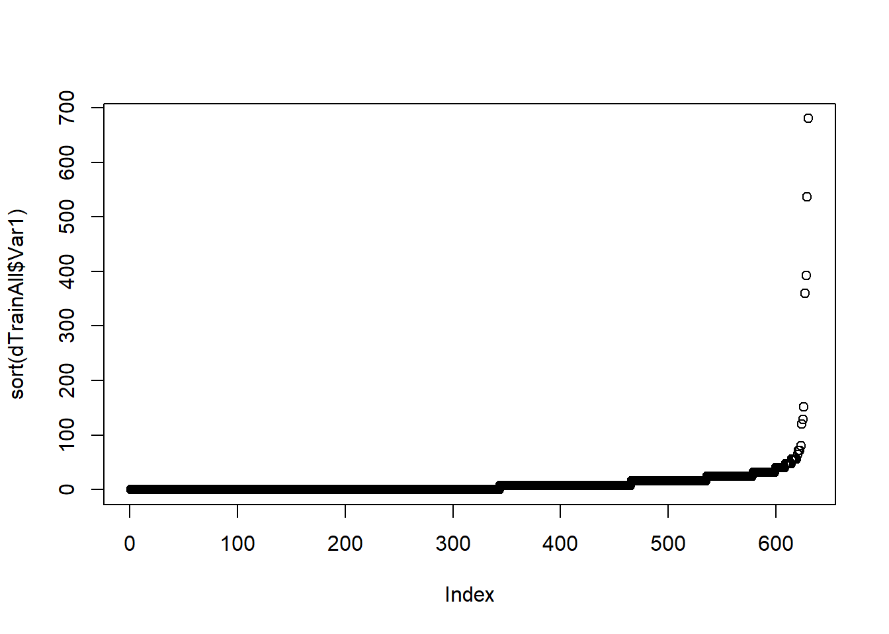
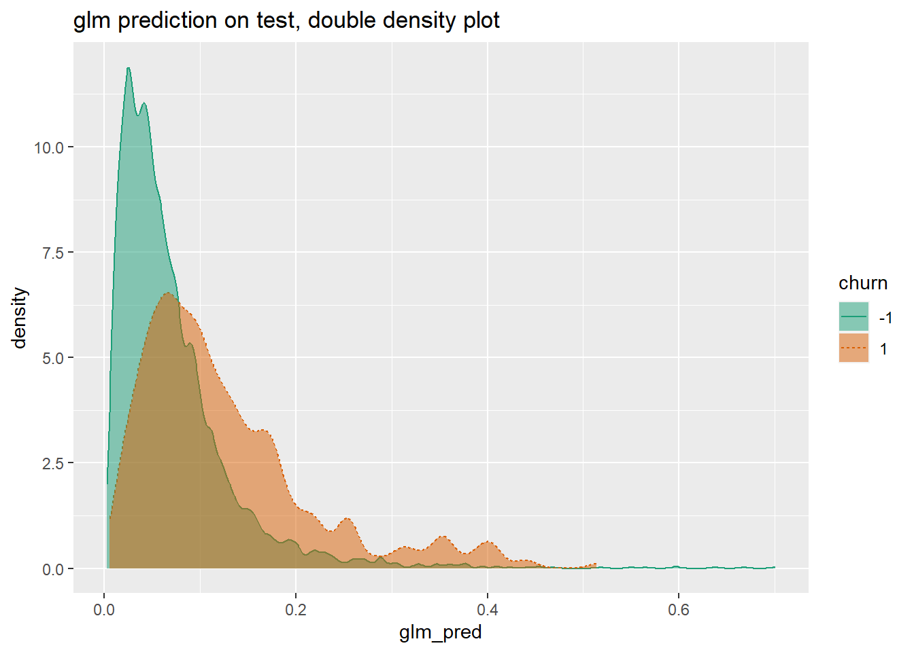
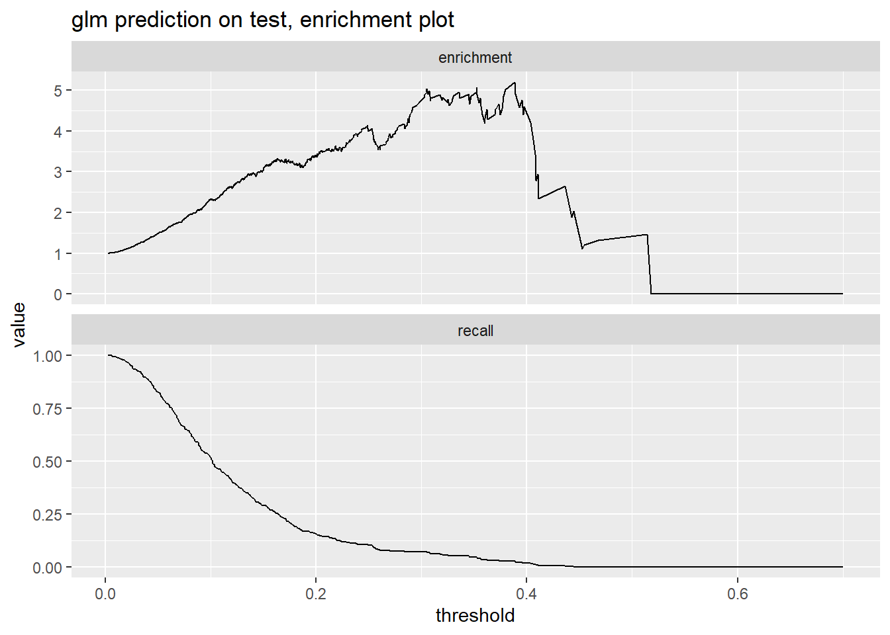

In this chapter we further analyze data using vtreat package. Basic way to use vtreat package is to split the data into three groups: one for learning the treatment, one for modeling and one for testing.
We will use a data set from KDD Cup 209 which gives information on 50,000 credit card accounts. The task is to predict churn or credit card cancellations based on a number of variables. Explanatory variables which are not described are available to to be used for prediction.
First, we look at the variable we are trying to predict and examine how much variation there is. In our problem, churn is binary - only takes two values. 1 represents that the event happened (account got cancelled) and -1 it did not.
d <- read.table('R_data_files/orange_small_train.data.gz', header = TRUE, sep = '\t', na.strings = c('NA', ''))
churn <- read.table('R_data_files/orange_small_train_churn.labels.txt', header = FALSE, sep = '\t')
d$churn <- churn$V1
set.seed(729375)
rgroup <- base::sample(c('train', 'calibrate', 'test'), nrow(d), prob = c(0.8, 0.1, 0.1), replace = TRUE)
dTrain <- d[rgroup == 'train', , drop = FALSE]
dCal <- d[rgroup == 'calibrate', , drop = FALSE]
dTrainAll <- d[rgroup %in% c('train', 'calibrate'), , drop = FALSE]
dTest <- d[rgroup == 'test', , drop = FALSE]
outcome <- 'churn'
vars <- setdiff(colnames(dTrainAll), outcome)
rm(list=c('d', 'churn', 'rgroup'))
outcome_summary <- table( churn = dTrain[, outcome], useNA = 'ifany')
knitr::kable(outcome_summary)| churn | Freq |
|---|---|
| -1 | 37110 |
| 1 | 2943 |
outcome_summary["1"] / sum(outcome_summary)## 1
## 0.07347764If we attempt to model the data without preparing the data, we will quickly run into major issues. By quickly looking at a couple of variables we can see that some of them having large amounts of missing data, others do not vary at all. For example, Var1 has 44,395 missing values out of 45,025 (most of them!); among those that are not missing, most are zero and a few are relatively very large (far away from the median).
summary(dTrainAll$Var1)## Min. 1st Qu. Median Mean 3rd Qu. Max. NA's
## 0.00 0.00 0.00 11.72 16.00 680.00 44395plot(sort(dTrainAll$Var1))
length(dTrainAll$Var1)## [1] 45025Another variable Var200 has over a thousand of levels which is way too many for a categorical variable for the size of the data set.
Having many issues with multiple if not majority or all variables calls us to use package vtreat. It will cleanup explanatory variables. To run vtreat using parallel computing to increase computational time, use the code below. Since there are many rows and columns, this may take a few minutes. Treated data will have old column modified and new columns created.
library("vtreat")
(parallel_cluster <- parallel::makeCluster(parallel::detectCores()))## socket cluster with 8 nodes on host 'localhost'treatment_plan <- vtreat::designTreatmentsC(dTrain, varlist = vars, outcomename = "churn", outcometarget = 1, verbose = FALSE, parallelCluster = parallel_cluster)
dTrain_treated <- prepare(treatment_plan, dTrain, parallelCluster = parallel_cluster)
cross_frame_experiment <- vtreat::mkCrossFrameCExperiment(
dTrainAll,
varlist = vars,
outcomename = "churn",
outcometarget = 1,
verbose = FALSE,
parallelCluster = parallel_cluster)
dTrainAll_treated <- cross_frame_experiment$crossFrame
treatment_plan <- cross_frame_experiment$treatments
score_frame <- treatment_plan$scoreFrame
dTest_treated <- prepare(treatment_plan,dTest,parallelCluster = parallel_cluster)Treatment score frame summarizes the the treatment. For example, looking at variables 126 and 189, we see that new binary variables were created Var126_isBAD and Var189_isBAD that indicate missing or ‘bad’ values of the corresponding variable. We are also given information about the pseudo r-squared (with significance level) which indicates how informative the variable may be at explaining the dependent variable. Sometimes, missing values can be better explain the outcome than the values themselves.
For every categorical variable, vtreat creates a set of new binary variables for each non-rare category including a category for missing values. The catB encoding returns a numerical value for every possible level of the original categorical value representing how informative the given level is. catP is a prevalence indicator. It show how often a level occurs.
t(subset(score_frame, origName == "Var218"))## 389 390 488
## varName "Var218_catP" "Var218_catB" "Var218_lev_x_cJvF"
## varMoves "TRUE" "TRUE" "TRUE"
## rsq "0.011810524" "0.013461009" "0.005423820"
## sig "1.605493e-62" "5.327975e-71" "1.185987e-29"
## needsSplit "TRUE" "TRUE" "FALSE"
## extraModelDegrees "2" "2" "0"
## origName "Var218" "Var218" "Var218"
## code "catP" "catB" "lev"
## default_threshold "0.006060606" "0.006060606" "0.001470588"
## recommended "TRUE" "TRUE" "TRUE"
## 489
## varName "Var218_lev_x_UYBR"
## varMoves "TRUE"
## rsq "0.001933412"
## sig "1.458742e-11"
## needsSplit "FALSE"
## extraModelDegrees "0"
## origName "Var218"
## code "lev"
## default_threshold "0.001470588"
## recommended "TRUE"comparison <- data.frame(original218 = dTrain$Var218, impact218 = dTrain_treated$Var218_catB)
head(comparison)## original218 impact218
## 1 cJvF -0.2180735
## 2 <NA> 1.5155125
## 3 UYBR 0.1221393
## 4 UYBR 0.1221393
## 5 UYBR 0.1221393
## 6 UYBR 0.1221393For a categorical variable Var200 which had a very large number of levels, vtreat only created a category that indicates missing value Var200_lev_NA, along with catB and catP.
score_frame[score_frame$origName == "Var200", , drop = FALSE]## varName varMoves rsq sig needsSplit
## 361 Var200_catP TRUE 0.005851453 7.383631e-32 TRUE
## 362 Var200_catB TRUE 0.001406796 8.437949e-09 TRUE
## 428 Var200_lev_NA TRUE 0.005851102 7.414462e-32 FALSE
## extraModelDegrees origName code default_threshold recommended
## 361 14417 Var200 catP 0.006060606 TRUE
## 362 14417 Var200 catB 0.006060606 TRUE
## 428 0 Var200 lev 0.001470588 TRUEOnce we have a treatment plan, we can now use it to prepare the calibration data.
dCal_treated <- prepare(treatment_plan, dCal, parallelCluster = parallel_cluster)If you do not have large enough data set for a split into three, you can use cross-validation procedure built in vtreat package. This can be done as follows.
parallel_cluster <- parallel::makeCluster(parallel::detectCores())
cross_frame_experiment <- vtreat::mkCrossFrameCExperiment(dTrainAll, varlist = vars, outcomename = "churn", outcometarget = 1, verbose = FALSE, parallelCluster = parallel_cluster)
dTrainAll_treated <- cross_frame_experiment$crossFrame
treatment_plan <- cross_frame_experiment$treatments
score_frame <- treatment_plan$scoreFrame
dTest_treated <- prepare(treatment_plan, dTest, parallelCluster = parallel_cluster)Once the treatment is complete, one needs to build a model. The main issue is to select what explanatory variables to use when trying to predict the outcome variable. Using too few variables may lead you to under-explaining the variation in the dependent variable, while using too many may lead to over-fitting leading to poor performance.
Let’s filter the variables based on linear significances determined in the vtreat’s score_frame. By selecting a threshold k, we expect that k irrelevant variables will pass through the filter. Under the selected=TRUE column, we see how many and what kind of variables passed through the filter.
k <- 1
(significance_cutoff <- k / nrow(score_frame))## [1] 0.001831502score_frame$selected <- score_frame$sig < significance_cutoff
suppressPackageStartupMessages(library("dplyr"))
score_frame %>%
group_by(., code, selected) %>%
summarize(.,
count = n()) %>%
ungroup(.) %>%
cdata::pivot_to_rowrecs(.,columnToTakeKeysFrom = 'selected', columnToTakeValuesFrom = 'count', rowKeyColumns = 'code', sep = '=')## # A tibble: 5 x 3
## code `selected=FALSE` `selected=TRUE`
## <chr> <int> <int>
## 1 catB 11 22
## 2 catP 7 26
## 3 clean 158 15
## 4 isBAD 60 111
## 5 lev 74 62Having decided on the variables to use and the model, say logistic regression, we can run the model using the following code.
library("wrapr")
newvars <- score_frame$varName[score_frame$selected]
f <- mk_formula("churn", newvars, outcome_target = 1)
model <- glm(f, data = dTrainAll_treated, family = binomial)To evaluate the model, we measure the area under the curve (AUC). It is 0.72 which is much better than 0.5 (random). If we only one variable that best predicts the outcome, we would only get AUC of 0.59. Using 0.15 threshold, we find that 466 accounts (356+110) were identified as at risk. Of the actual 376 churners (266+110), 110 were identified correctly (that is, we identified 29%). IF we just randomly guessed, we would only be right 9.3%.
library("sigr")
dTest_treated$glm_pred <- predict(model,
newdata = dTest_treated,
type = 'response')
calcAUC(dTest_treated$glm_pred, dTest_treated$churn == 1)## [1] 0.724806permTestAUC(dTest_treated, "glm_pred", "churn", yTarget = 1)## [1] "<b>AUC test alt. hyp. AUC>AUC(permuted)</b>: (<i>AUC</i>=0.7248, <i>s.d.</i>=0.01552, <i>p</i><1e-05)."var_aucs <- vapply(newvars,
function(vi) {
calcAUC(dTrainAll_treated[[vi]], dTrainAll_treated$churn == 1)
}, numeric(1))
(best_train_aucs <- var_aucs[var_aucs >= max(var_aucs)])## Var216_catB
## 0.5935357table(prediction = dTest_treated$glm_pred>0.15,
truth = dTest$churn)## truth
## prediction -1 1
## FALSE 4233 266
## TRUE 366 110We can also investigate the threshold we pick visually using enrichment and recall figures. If we pick 0.2 as a threshold, we would identify around 0.12 of the at-risk accounts (see Recall figure) and warn those who have a cancellation risk 3 times higher than the general population (see Enrichment figure).
WVPlots::DoubleDensityPlot(dTest_treated, "glm_pred", "churn",
"glm prediction on test, double density plot")
WVPlots::PRTPlot(dTest_treated, "glm_pred", "churn",
"glm prediction on test, enrichment plot",
truthTarget = 1, plotvars = c("enrichment", "recall"), thresholdrange = c(0, 1.0))
Preparing data for regression model using vtreat package is similar. Let’s work through an example in which we aim to predict car’s fuel economy based on various car characteristics.
auto_mpg <- readRDS('R_data_files/auto_mpg.RDS')
knitr::kable(head(auto_mpg))| mpg | cylinders | displacement | horsepower | weight | acceleration | model_year | origin | car_name |
|---|---|---|---|---|---|---|---|---|
| 18 | 8 | 307 | 130 | 3504 | 12.0 | 70 | 1 | “chevrolet chevelle malibu” |
| 15 | 8 | 350 | 165 | 3693 | 11.5 | 70 | 1 | “buick skylark 320” |
| 18 | 8 | 318 | 150 | 3436 | 11.0 | 70 | 1 | “plymouth satellite” |
| 16 | 8 | 304 | 150 | 3433 | 12.0 | 70 | 1 | “amc rebel sst” |
| 17 | 8 | 302 | 140 | 3449 | 10.5 | 70 | 1 | “ford torino” |
| 15 | 8 | 429 | 198 | 4341 | 10.0 | 70 | 1 | “ford galaxie 500” |
Here, we have data on miles per galon (whcih we will try to predict, number of engine cylinders, displacement and horsepower, as well as car’s weight and accelaration (to 60mph). A car name is also given as a string variable.
In some cases, it is interesting to see what we will get if we simply run the regression using all the independent variables without treating the data. Since we have missing values of horespower, we cannot predict the mpg for a few cars.
library("wrapr")
vars <- c("cylinders", "displacement",
"horsepower", "weight", "acceleration",
"model_year", "origin")
f <- mk_formula("mpg", vars)
model <- lm(f, data = auto_mpg)
auto_mpg$prediction <- predict(model, newdata = auto_mpg)
str(auto_mpg[!complete.cases(auto_mpg), , drop = FALSE])## 'data.frame': 6 obs. of 10 variables:
## $ mpg : num 25 21 40.9 23.6 34.5 23
## $ cylinders : num 4 6 4 4 4 4
## $ displacement: num 98 200 85 140 100 151
## $ horsepower : num NA NA NA NA NA NA
## $ weight : num 2046 2875 1835 2905 2320 ...
## $ acceleration: num 19 17 17.3 14.3 15.8 20.5
## $ model_year : num 71 74 80 80 81 82
## $ origin : Factor w/ 3 levels "1","2","3": 1 1 2 1 2 1
## $ car_name : chr "\"ford pinto\"" "\"ford maverick\"" "\"renault lecar deluxe\"" "\"ford mustang cobra\"" ...
## $ prediction : num NA NA NA NA NA NAOne should investigate why the values are missing and take appropriate action. If the values are missing independently fo the car characteristics, we can simply use vtreat package to help us clean the data. After treating the data using vtreat, we have predictions even for the cars with missing values. One should figure out hwo the missing values and other aspects of treatment were dealt with.
library("vtreat")
cfe <- mkCrossFrameNExperiment(auto_mpg, vars, "mpg",
verbose = FALSE)
treatment_plan <- cfe$treatments
auto_mpg_treated <- cfe$crossFrame
score_frame <- treatment_plan$scoreFrame
new_vars <- score_frame$varName
newf <- mk_formula("mpg", new_vars)
new_model <- lm(newf, data = auto_mpg_treated)
auto_mpg$prediction <- predict(new_model, newdata = auto_mpg_treated)
str(auto_mpg[!complete.cases(auto_mpg), , drop = FALSE])## 'data.frame': 6 obs. of 10 variables:
## $ mpg : num 25 21 40.9 23.6 34.5 23
## $ cylinders : num 4 6 4 4 4 4
## $ displacement: num 98 200 85 140 100 151
## $ horsepower : num NA NA NA NA NA NA
## $ weight : num 2046 2875 1835 2905 2320 ...
## $ acceleration: num 19 17 17.3 14.3 15.8 20.5
## $ model_year : num 71 74 80 80 81 82
## $ origin : Factor w/ 3 levels "1","2","3": 1 1 2 1 2 1
## $ car_name : chr "\"ford pinto\"" "\"ford maverick\"" "\"renault lecar deluxe\"" "\"ford mustang cobra\"" ...
## $ prediction : num 24.2 22.3 35.2 26 32.8 ...vtreat package works in two phases: a design phase, in which it learns the details of your data, and application/preparation phase, in which it derives new explanatory variables better suited for predictive modeling.
For treatment design phase, you can rely on the following commands:
There are standard practices how to deal with missing values. They include (1) restricting the data to complete cases or, in other words, removing the observations with missing values, (2) imputing the missing values, for example by letting the missing value be average value of that variable, (3) use models that tolerate missing values, (4) treat missing values as observable information.
In the example below, we let the NA for the numeric variable to take the mean value of that variable (x1), and create a new variable that indicates that this value is missing.
library("wrapr")
d <- build_frame(
"x1" , "x2" , "x3", "y" |
1 , "a" , 6 , 10 |
NA_real_, "b" , 7 , 20 |
3 , NA_character_, 8 , 30 )
knitr::kable(d)| x1 | x2 | x3 | y |
|---|---|---|---|
| 1 | a | 6 | 10 |
| NA | b | 7 | 20 |
| 3 | NA | 8 | 30 |
plan1 <- vtreat::design_missingness_treatment(d)
vtreat::prepare(plan1, d) %.>%
knitr::kable(.)| x1 | x1_isBAD | x2 | x3 | y |
|---|---|---|---|---|
| 1 | 0 | a | 6 | 10 |
| 2 | 1 | b | 7 | 20 |
| 3 | 0 | invalid | 8 | 30 |
Most statistical and machine learning techniques require variables to be numeric. Non-numeric variables, thus, need to be transformed into numeric. A popular transformation is creating dummy variables for each non-numeric value. This is also known as creating indicator variables or one-hot encoding.
In the example below, the x2 string variable is converted to multiple binary variables for each level (including missing values).
d <- build_frame(
"x1" , "x2" , "x3", "y" |
1 , "a" , 6 , 10 |
NA_real_, "b" , 7 , 20 |
3 , NA_character_, 8 , 30 )
print(d)## x1 x2 x3 y
## 1 1 a 6 10
## 2 NA b 7 20
## 3 3 <NA> 8 30plan2 <- vtreat::designTreatmentsZ(d,
varlist = c("x1", "x2", "x3"),
verbose = FALSE)
vtreat::prepare(plan2, d)## x1 x1_isBAD x3 x2_lev_NA x2_lev_x_a x2_lev_x_b
## 1 1 0 6 0 1 0
## 2 2 1 7 0 0 1
## 3 3 0 8 1 0 0Impact coding (also known as effects coding and target encoding) is replacing a level entry with its numeric effect. This is done when a string-valued variable has too many possible values/levels and would lead to too many binary variables if coded separately.
See plan3 in which we create impact-coded variable x2_catN.
See plan4 how to create impact coding for a categorical variable which will be measured in logistic units (log of an odds-ratio).
d <- build_frame(
"x1" , "x2" , "x3", "y" |
1 , "a" , 6 , 10 |
NA_real_, "b" , 7 , 20 |
3 , NA_character_, 8 , 30 )
print(d)## x1 x2 x3 y
## 1 1 a 6 10
## 2 NA b 7 20
## 3 3 <NA> 8 30plan3 <- vtreat::designTreatmentsN(d,
varlist = c("x1", "x2", "x3"),
outcomename = "y",
codeRestriction = "catN",
verbose = FALSE)
vtreat::prepare(plan3, d)## x2_catN y
## 1 -10 10
## 2 0 20
## 3 10 30plan4 <- vtreat::designTreatmentsC(d,
varlist = c("x1", "x2", "x3"),
outcomename = "y",
outcometarget = 20,
codeRestriction = "catB",
verbose = FALSE)
vtreat::prepare(plan4, d)## x2_catB y
## 1 -8.517343 10
## 2 9.903538 20
## 3 -8.517343 30The treatment plant creates a set of rules how to process training data before fitting it to a model, and rules how new data will be processed before applying it to the model.
class(plan4)## [1] "treatmentplan"names(plan4)## [1] "treatments" "scoreFrame" "outcomename" "vtreatVersion"
## [5] "outcomeType" "outcomeTarget" "meanY" "splitmethod"
## [9] "fit_obj_id"plan4$scoreFrame## varName varMoves rsq sig needsSplit extraModelDegrees origName code
## 1 x2_catB TRUE 1 0.0506719 TRUE 2 x2 catB
## default_threshold recommended
## 1 1 TRUEThe variable score frame is a data frame showing derived explanatory variables, what variable it is derived from, what type of transformation was applied, and some quality summaries about the statistic.
The cross frame is an item found when you use the same data for both the design and training using a cross-validation technique. Naively reusing the same data will create a model that will look very well on the training data but will fail on any application on new data. You can use cross-validation with vtreat package as follows.
As you can see, using the same data for training and testing, we suffer from overfitting which inflates our variable quality estimate. x_bad_catN’s F-test is inflated and falsely looks significant.
# Create a simple data set
set.seed(2019)
d <- data.frame(
x_bad = sample(letters, 100, replace = TRUE),
y = rnorm(100),
stringsAsFactors = FALSE)
d$x_good <- ifelse(d$y > rnorm(100), "non-neg", "neg")
head(d)## x_bad y x_good
## 1 y -0.7603575 non-neg
## 2 j 0.4442418 non-neg
## 3 e 1.7386856 non-neg
## 4 m -0.7752029 non-neg
## 5 q -1.1825636 neg
## 6 x -0.3140285 non-neg# Naively reusing the same data
plan5 <- vtreat::designTreatmentsN(d,
varlist = c("x_bad", "x_good"),
outcomename = "y",
codeRestriction = "catN",
minFraction = 2,
verbose = FALSE)
class(plan5)## [1] "treatmentplan"print(plan5)## [1] "treatmentplan"
## origName varName code rsq sig extraModelDegrees
## 1 x_bad x_bad_catN catN 9.93962e-05 9.215776e-01 25
## 2 x_good x_good_catN catN 3.25805e-01 5.631959e-10 1
## recommended
## 1 FALSE
## 2 TRUEtraining_data1 <- vtreat::prepare(plan5, d)
res1 <- vtreat::patch_columns_into_frame(d, training_data1)
head(res1)## x_bad x_good x_bad_catN x_good_catN y
## 1 y non-neg 0.2879701 0.523549 -0.7603575
## 2 j non-neg -0.1957772 0.523549 0.4442418
## 3 e non-neg 0.1720338 0.523549 1.7386856
## 4 m non-neg -0.3295562 0.523549 -0.7752029
## 5 q neg -0.5767783 -0.590385 -1.1825636
## 6 x non-neg -0.2259024 0.523549 -0.3140285sigr::wrapFTest(res1, "x_good_catN", "y")## [1] "F Test summary: (R2=0.3241, F(1,98)=46.98, p<1e-05)."sigr::wrapFTest(res1, "x_bad_catN", "y")## [1] "F Test summary: (R2=0.1943, F(1,98)=23.64, p<1e-05)."# Using cross-validation
cfe <- vtreat::mkCrossFrameNExperiment(d,
varlist = c("x_bad", "x_good"),
outcomename = "y",
codeRestriction = "catN",
minFraction = 2,
verbose = FALSE)
plan6 <- cfe$treatments
training_data2 <- cfe$crossFrame
res2 <- vtreat::patch_columns_into_frame(d, training_data2)
head(res2)## x_bad x_good x_bad_catN x_good_catN y
## 1 y non-neg 0.7808611 0.4535235 -0.7603575
## 2 j non-neg -1.4621185 0.4535235 0.4442418
## 3 e non-neg -0.4041591 0.5424189 1.7386856
## 4 m non-neg -0.2240972 0.5772362 -0.7752029
## 5 q neg -1.1043780 -0.7107558 -1.1825636
## 6 x non-neg 0.0000000 0.5424189 -0.3140285sigr::wrapFTest(res2, "x_bad_catN", "y")## [1] "F Test summary: (R2=-0.6653, F(1,98)=-39.15, p=n.s.)."sigr::wrapFTest(res2, "x_good_catN", "y")## [1] "F Test summary: (R2=0.3039, F(1,98)=42.78, p<1e-05)."plan6$scoreFrame## varName varMoves rsq sig needsSplit extraModelDegrees
## 1 x_bad_catN TRUE 0.0806097 4.201189e-03 TRUE 25
## 2 x_good_catN TRUE 0.3117822 1.576683e-09 TRUE 1
## origName code default_threshold recommended
## 1 x_bad catN 0.5 TRUE
## 2 x_good catN 0.5 TRUEReferences
Zumel, N., & Mount, J. (2014). Practical Data Science With R. Manning Publications Co.